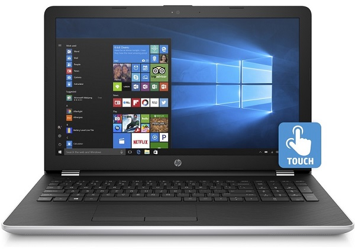
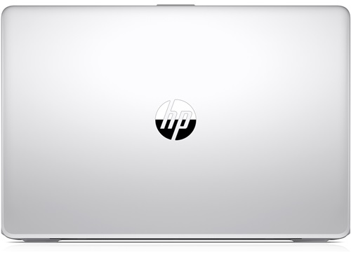
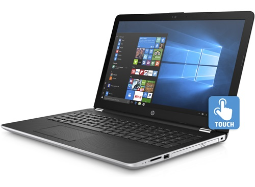
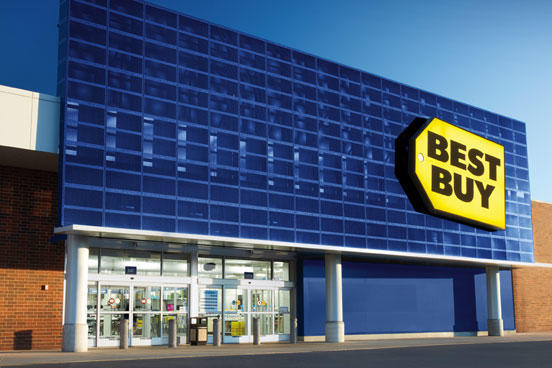

Portable tactile 15,6 po de HP (Argenté)
Core i5-7200U Intel – DD 1 To – RAM 8 Go – Windows 10 ®

Survol
Le portable tactile de 15,6 po 15-BS028CA de HP offre les performances dont vous avez besoin pour le jeu ou le
travail. Un processeur de 2,5 GHz Core i5 d'Intel, 8 Go de mémoire vive et un disque dur de 1 To vous assurent de
rester productif. Son écran tactile DEL de 15,6 po produit une image nette, lumineuse et détaillée pour tout votre
contenu. Il comporte un port Ethernet Gigabit et la connectivité Wi-Fi.

En savoir plus
-
Processeur
Core i5-7200U à 2,5 GHz d'Intel et 8 Go de mémoire vive DDR4 offrant une performance rapide, réactive
et fiable pour toutes vos activités informatiques quotidiennes.
-
Disque dur
de 1 To offrant beaucoup d'espace pour stocker tous vos fichiers
-
Écran tactile
rétroéclairé par DEL blanches HD SVA de 15,6 po avec résolution native de 1366 x 768 produisant
une image claire, lumineuse et détaillée pour vos pages Web et vos logiciels.
-
Port Ethernet
10/100 pour une connexion fiable et sécurisée par câble, et une plus grande vitesse de transfert
de données.

Détails et caractéristiques
- Écran
- Format de l'écran : 15,6 po
- Résolution d'écran : 1366 x 768 px
- Processeur
- Type de processeur : Core i5-7200U d'Intel
- Vitesse du processeur : 2,5 GHz
- Disque dur
- Capacité du disque dur : 1 To
- Vitesse du disque dur : 5400 RPM
Nous contacter

Adresse : 3450 Boul. de Portland, Sherbrooke, QC, J1L 2A6
Numéro de téléphone : (819) 347-3275